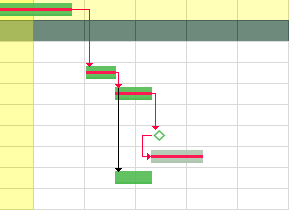
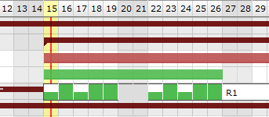
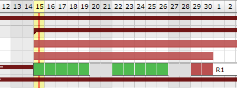
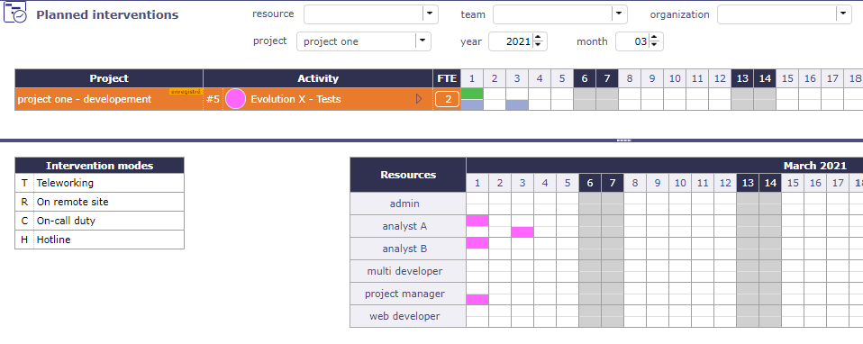
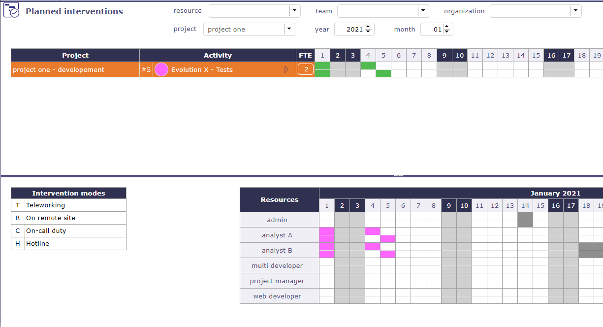

The Gantt chart is a tool used in scheduling and project management and allowing to visualize in time the various tasks composing a project.
It is a representation of a connected graph, evaluated and oriented, which makes it possible to graphically represent the progress of the project.
Note
For large projects, with many sub-projects and activities, we limit the number of lines to display so as not to deteriorate performance, even if the project selector has already contextualized the display.
to display all successors of the selected element.
Click on to clear the selection of the predecessor or successor
Activity planning calculation
When you make a modification on an element of your project, the project must then be recalculated to take it into account.
You have the option of using the automatic calculation function, which, if you make a modification on the planning screen, and only on this screen, will immediately take this modification into account.
If the modification is made on another screen, even if you have selected automatic calculation then, you will have to restart the calculation on the planning screen.
Click on to start the activity planning calculation.
A popup window appears with the list of projects.
The check boxes allow you to select one or more projects to recalculate.
If you have selected one or more projects with Project Selector then the selected projects will be automatically checked.
Choose the date on which you want to recalculate the project.
By checking the “Hide unselected projects” box, you will only have the projects selected in the project selector and they will be automatically checked.
Swith the button to activate automatic calculation on each change.
Only works on the Gantt Planning view.
If the modification of an element is carried out on the dedicated screen of the element, then it is necessary to click again on BUTTON to restart the computation
All modifications about assignement (rate, name or numbers of resources, dates…) done are not displayed on the new planning screen until having, for this purpose, activited the planning calculation, either in an automatic run plan or not.
On the contrary, the screen planning will not change even if modifications have been loaded yet.
Automatic calculation
Differential calculation = calculation of projects that require a recalculation.
Complete calculation = calculation of all projects
The calculations are programmed according to a frequency of CRON type (every minute, every hour, at a given hour every day, at a given time on a given week day, …)
The critical path allows you to determine the total duration of your project. This is the longest sequence of tasks that must be completed for the project to be completed on time.
The Critical Chain, meanwhile, is a technique for planning and monitoring deadlines but has the same principle: take into account the constraints to determine the duration of the project and the critical tasks that may impact this duration.
One of these constraints is the taking into account of resource or skill limitations in addition to the dependencies between the tasks and the implementation of buffers, i.e. time reserves, in the critical chain and the secondary chains.
ProjeQtOr offers you a critical chain rather than a critical path, but for better understanding, the term Critical path has been retained.
click on the critical path check box to calculate and display the red path in the Gantt schedule.

The red net represents the critical path of the project.¶
Note
The tasks of the project which are not crossed by the critical path are elements which will not affect the duration of the project and, even modified, will not automatically involve a modification of this duration for the entire project.
The detail of the bars is visible with a right click directly on the bars.
By default, this detail showing the dispatch of the planned work for the resources, does not remain displayed when you no longer hover over the bar after the right click.
Activate this option so that the detail remains displayed
You can print directly on your printer or export in PDF format or in MS Project format
Print planning
Click on the button to print the Gantt chart in A4 and / or A3 format.
The print quality, despite printing or exporting on a reduced scale, remains very qualitative and offers very little loss of detail in the diagram.
Export planning to PDF
Allows to export planning to PDF format.
Export can be done horizontally (landscape) or vertically (portrait) in A4 and / or A3 format
with great detail even with a zoom
Export contains all details and links between tasks and also include a pagination.
And the option Repeat Headers allow you to print or export your planning in multiple pages
This feature will execute export on client side, in your browser. Thus the server will not be heavy loaded like standard PDF export does.
It is highly faster than standard PDF export.
Warning
This technically complex feature is highly dependent on the browser and is not compatible with all of them.
It is compatible with the latest versions of IE (v11), Firefox, Edge and Chrome. Otherwise, the old export function will be used.
Tip
Forced feature activation/deactivation
To enable this feature for all browsers, add the parameter $pdfPlanningBeta=’true’; in parameters.php file.
To disable if for all browsers, add the parameter $pdfPlanningBeta=’false’;
Default (when $pdfPlanningBeta parameter is not set) is enabled with Chrome, disabled with other browsers
Scale available: daily, weekly, monthly and quarter.
The Gantt chart view will be adjusted according to scale selected.
When you are in the planning view on the wbs and gantt area and details area, you can move from one scale to another using the wheel control on your mouse.
Mouse wheel up to increase the scale*.
Mouse wheel down to decrease the scale.
When you continue to increase after the semester, then we loop and return to the day scale, the smallest.
Outside of these areas, the mouse wheel will increase the zoom of your browser.
Condition: If a resource is not or is no longer available on an activity.
The calculator is trying to plan the workload. The resource assigned to the activity is unable to be planned for this task (absence, calendar, assignment or assignment periods, etc.); then the bar turns purple.
Condition: The capacity of the resource has been changed. It can be under capacity or over capacity. That is to say, it does less or more than its FTE.
Condition: the length represents the percentage of completion of the units of work that you enter manually (Delivered - completed) in relation to the length of the Gantt bar.
You can display both progress bars at the same time on the Gantt chart bar.
Negative delay allows overlapping of certain tasks
See the strict mode of dependencies
Dependency types
End-Start
The second activity can not start before the end of the first activity.
Start-Start
The successor can not begin before the beginning of the predecessor. Anyway, the successor can begin after the beginning of the predecessor.
End-End
The successor should not end after the end of the predecessor, which leads to planning “as late as possible”.
Anyway, the successor can end before the predecessor. Note that the successor “should” not end after the end of predecessor, but in some cases this will not be respected:
if the resource is already 100% used until the end of the successor
if the successor has another predecessor of type “End-Start” or “Start-Start” and the remaining time is not enough to complete the task
if the delay from the planning start date does not allow to complete the task
Strict mode for dependencies
The strict dependency mode forces the successor planning element not to start on the same day as the same predecessor but the next day. Even if the task is finished before the end of the day.
To have the successor start on the same day or before the end of the predecessor task, select NO for strict mode or you can also put a negative delay.
By right clicking on each of the lines you have access to the Gantt submenu which allows you to access certain actions by going through the main menu of the screen.
The planning is calculated as simply as possible. This means that no complex algorithm is applied.
The principle adopted is simply to be able to reproduce what you could do with a spreadsheet type spreadsheet, but this time automatically.
All unrealized work is planned, from the start date to the maximum date depending on the load assigned to the project(s).
The calculations are performed task by task, according to the following organization
WBS
The WBS (Work Breakdown Structure), that is to say the structure or scheduling of your schedule is planned first if no other constraint comes to disturb this order. It is read from top to bottom and from left to right.
The validated end date
It is possible to set the default priority of activities from the finish date posted before the order in the WBS structure.
This will give higher priority to activities that need to finish sooner, regardless of WBS.
The planned end date is by default the validated end date.
If the validated end date is not defined, the planned end date can be retrieved from a successor (e.g. end milestone) or from the parent.
If two activities have the same scheduled end date, the WBS is always the last priority criterion.
This feature can be disabled in Global setting to fetch default WBS criteria only.
Priorities of activities
All activities with the lowest priority value will potentially be scheduled first.
Project priorities
The smallest value (index) is calculated first, this means in particular that if the projects have different priorities, all activities of the project with the smallest priority value will potentially be planned first.
Planning modes
“The must start on the validated date”, “regular between two dates” and “recurring” modes are priority modes compared to the other activity planning modes other than manual planning.
Dependencies
If an activity or project has a predecessor, the predecessor is always scheduled first.
Meetings
It is fixed on a given date. Even if not all of the participants are available. In this case, an alert informs you and the Gantt chart displays the unavailability.
Planning Manual and planned interventions
This highest priority planning mode. The workload assigned with this planning mode can be recorded in planned work or in actual work.
Projeqtor offers several ways to plan the workload for your resource with 11 different planning modes.
The order of the planning modes is not random and the further you go down the list, the more the planning modes have priority and will recover the load on the tasks that can be scheduled in the previous planning modes.
The task is planned by duration. The validated duration field must be filled in.
If work is assigned to the task, the scheduling behavior is the same as “Regular Between Dates”.
Ability to readjust (start and end date) the task with handles directly on the Gantt view bar.
When the number of assigned work days exceeds the indicated duration, then the days (detail of the Gantt bars) following the validated end date of the activity will be in red.
If the allocation of resources exceeds the set validated duration then the distribution of remaining work becomes overuse.
When the assigned workload does not exceed the number of days of fixed duration then the planning mode distributes the workload by smoothing it throughout the duration, exactly as with the fixed duration or the regular between two dates.
In automatic calculation mode, only the activity in this mode will be recalculated.
Other activities, even those driven by dependencies, will only be recalculated with the full calculation function.
Ability to readjust and move the task (handles on each side of the bar) directly on the Gantt.
With the left handle you adjust the full bar without changing the duration.
Planning mode Duration driven: work that exceeds the duration is calculated as overuse¶
If a stronger constraint, such as dependencies or real work, is specified, the planning mode will no longer be respected.
You can block resource imputations in this planning mode by enabling the global parameters “lock timesheet before validated start date” in global settings
The task must not begin before this specific date.
This planning mode reclaims time from previous planning modes.
It has priority over the “as soon as possible”, “fixed duration” and “work together” modes.
The start date is no longer respected if a stronger constraint, such as dependencies or real work, is specified.
You can block resource imputations in this planning mode by enabling the global parameters “lock timesheet before validated start date” in global settings
If the dates are too short compared to the assigned load, the excess load will be divided and added in the same way as the chosen mode.
So you can get full days even in regular mode in quarter day or half days.
Example with 8 days of workload to plan over 10 days with the Regular mode in half days between dates

The load is distributed regularly so as to respect the dates.

If the load is too high to meet the dates, the excess load will be distributed over the whole day after the validated end date and will therefore be late (red color)
This mode allows you to plan the workload on a weekly basis which will be distributed each week, for example 1/2 day every Monday, 1 hour every day, etc.
It automatically adapts to the elements which determines the total duration of the project. If the project falls behind schedule, this mode will continue to adapt and automatically distribute the load for each added day.
Tip
Please note, the project is only an envelope, it is the elements that compose it which will determine its duration.
A recurring activity cannot be calculated correctly if it is the only component of the project, even if it has validated dates.
Other elements (Activities, milestones, etc.) will be needed for the distribution of this load to be done correctly.
Click to enter the load for each day of the week.
The work is distributed dynamically according to the load indicated on the assignment table.
Planning mode in half day: assigned days are distributed evenly in quarter days¶
If you don’t want the recurring activity to fit the project, you can limit it between finish-to-start and finish-to-finish milestones.
Planning mode in half day: assigned days are distributed evenly in quarter days¶
The critical resources screen will allow you to identify the resources that will cause the project to drift and not miss certain key dates due to lack of capacity on the project.
This amounts to calculating the complete schedule and all your resources in infinite overbooking mode.
Its rank (Index used to calculate the margin = difference between available - used)
This table of critical resources is broken down by project.
Projects using critical resources
The Projects using critical resources table allows you to visualize the number of days late per project and which resources are causing the delay.
The strategic value has no impact on the display of projects and the determination of critical resources. This (numerical) value is free and left to your discretion.
It can be a value between 1 and 100, or a number of Business, regardless, this will allow you to identify whether projects consuming critical resources are strategically sound and therefore worth implementing.
The Critical resources planning
The Critical resources list by period table is a representation of the current planning, not the ideal planning.
The display will be done by period defined on the scale (week, month, quarter) or by displaying the “overbooking load” necessary to optimize the planning.
The display area allows you to filter the resources you want to display.
The screen is blank until you select the resource, the team or the organization.
The calendar is displayed for the resource or for all members of the selected team or organization.
These parameters are not exclusive, you can select team and organization.
Resource
Filter by resource on calendar display.
Team
Filter by team on calendar display.
Organization
Filter by organization on calendar display.
Project
Filter by project on calendar display.
Year
Select the year to display.
Month
Select the month to display.
Hide done items
You can hide the activities recorded in the “done” state in the displayed list.
Note
The selected parameters, except the month, always set by default to the current month, are saved as a user parameter.
When the user returns to the screen, he therefore finds the last parameters entered
List of Projects and activity
The list of activities displayed are in the planning mode “manual planning”. If no filter is selected (project, resource, organization …) then the screen does not display any data.
You cannot create new activities in manual planning mode from the intervention screen. You need to access the activities or schedule screen to create the new activity in manual planning mode. The new activity will then appear in the list.
Click on to access the activity screen and view its detail
FTE
In this calendar, we display graphically if we respect the quantity of people requested on the activity and on the half day.
Fill in an integer value for each activity to check.
If you enter 1, you expect at least one person to perform half a day on this activity.
A check is then carried out and takes into account all the resources assigned to each activity, and not only those selected and visible on the calendar.
If the field is left empty or at 0 then no control is carried out and the calendar will not display any green or red box.
Blue box
When you start to put in the workload but do not yet reach all of the expected FTEs.

Green Box
If the entry respects the workload constraint expected in FTE the box is green.

Example with a value of 2 in the FTE field for the selected activity.
This FTE value is defined for each half-day.
You must therefore have 2 effective persons planned for each half day whatever the resource or resources that will be provided.
Red Box
If the total entry is greater than the expected workload in FTE the box is red.
The box then turns red: the workload is higher than expected since we expected a person on this half day and on this activity
Non-colored box
There is no expected workload.
Interventions mode
The list of possible intervention methods is customizable.
This list can be modified via a setting screen in the list of values.
The saved modes will remain fixed for all projects and all teams.
Click on to organize the columns of the progress data view.
Click on to display the sub-menu.
Click on to display this screen in horizontal or vertical mode.
print and export
You can print directly on your printer or export in PDF format.
Print planning
Click on the button to print the Gantt chart in A4 and / or A3 format.
The print quality, despite printing or exporting on a reduced scale, remains very qualitative and offers very little loss of detail in the diagram.
Export planning to PDF
Allows to export planning to PDF format.
Export can be done horizontally (landscape) or vertically (portrait) in A4 and / or A3 format with great detail even with a zoom
Export contains all details and links between tasks and also include a pagination.
And the option Repeat Headers allow you to print or export your planning in multiple pages
This feature will execute export on client side, in your browser. Thus the server will not be heavy loaded like standard PDF export does.
It is highly faster than standard PDF export.
Warning
This technically complex feature is highly dependent on the browser and is not compatible with all of them.
It is compatible with the latest versions of IE (v11), Firefox, Edge and Chrome. Otherwise, the old export function will be used.
Tip
Forced feature activation/deactivation
To enable this feature for all browsers, add the parameter $pdfPlanningBeta=’true’; in parameters.php file.
To disable if for all browsers, add the parameter $pdfPlanningBeta=’false’;
Default (when $pdfPlanningBeta parameter is not set) is enabled with Chrome, disabled with other browsers
Display dates
This functionality allows to define columns displayed in the progress data view.
 Predecessor and Successor
Predecessor and Successor to display all predecessors of the selected element
to display all predecessors of the selected element to display the first level of successors of the selected element
to display the first level of successors of the selected element to clear the selection of the predecessor or successor
to clear the selection of the predecessor or successor Activity planning calculation
Activity planning calculation to start the activity planning calculation.
to start the activity planning calculation. Automatic run plan
Automatic run plan Create a baseline
Create a baseline


 Add a new planning element
Add a new planning element


to print the Gantt chart in A4 and / or A3 format.

 Project
Project Projet fixed in the planning
Projet fixed in the planning Activity
Activity Milestone
Milestone Meeting
Meeting allows to reorder the planning elements.
allows to reorder the planning elements.
 to manage them.
to manage them.


on the corresponding section to add a dependency link.
to edit the dependency link.
to delete the corresponding dependency link.

End-Start
Start-Start


{kind=link}
{kind=link}
{kind=link}
{kind=link}
{kind=link}
{kind=link}
{kind=link}
{kind=link}
{kind=link}
{kind=link}
{kind=link}
{kind=link}
{kind=link}
{kind=link}
{kind=link}
{kind=link}
{kind=link}
{kind=link}
{kind=link}
{kind=link}
{kind=link}
{kind=link}
to recorded the modification
to cancel the modification


 to access the activity screen and view its detail
to access the activity screen and view its detail


 to view the projects on which resource activities depend.
to view the projects on which resource activities depend.

 to apply many filters. See: Advanced filters.
to apply many filters. See: Advanced filters. to display the sub-menu.
to display the sub-menu.{kind=link}